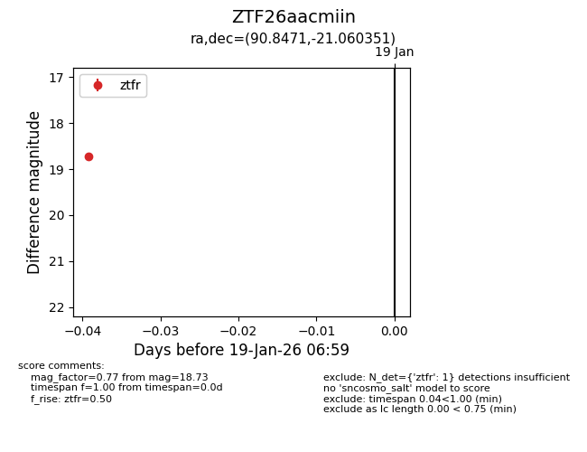
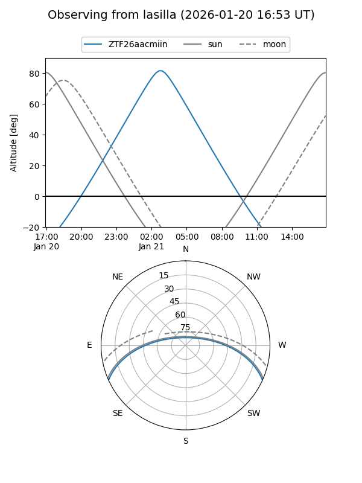

ZTF26aacmiin
Target ZTF26aacmiin at 2026-01-21 07:06
Aliases and brokers:
FINK: link
Lasair: link
ALeRCE: link
alt names
ZTF26aacmiin (ztf,fink_ztf)
Coordinates:
equatorial (ra, dec) = 90.8471,-21.06035
equatorial (HMS+DMS) = 06:03:23.31,-21:03:37.26
galactic (l, b) = (227.1491,-19.67669)
Flags:
Photometry:
last ztfg=19.00, ztfr=18.73
1 ztfg, 1 ztfr detections
Lightcurve

Visibility


Additional plots